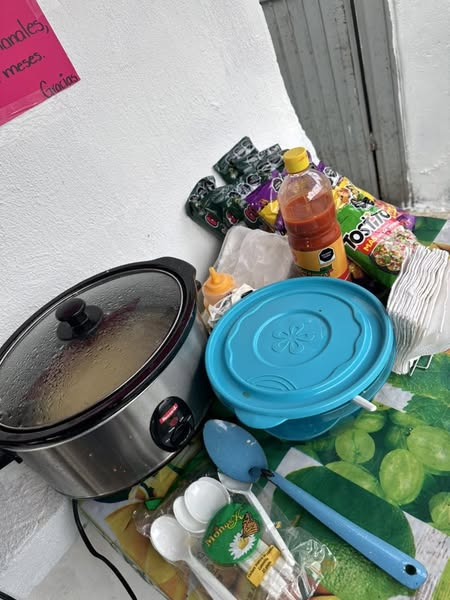
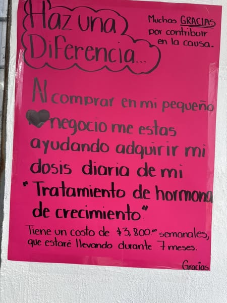

Ella es SOL
Sol Miranda Pérez Castro es una joven de 16 años residente de Monterrey, Nuevo León, quien padece Síndrome de Turner. El tratamiento para mejorar su calidad de vida es de alto costo, por lo que ella ha decidido iniciar un pequeño emprendimiento para ayudar a costearlo.


